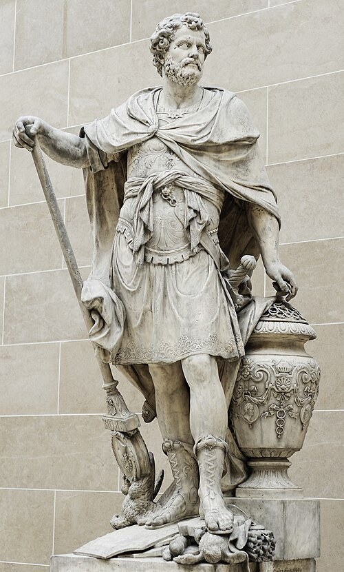
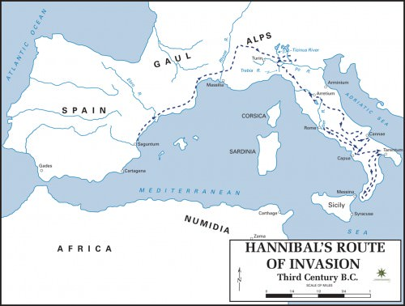
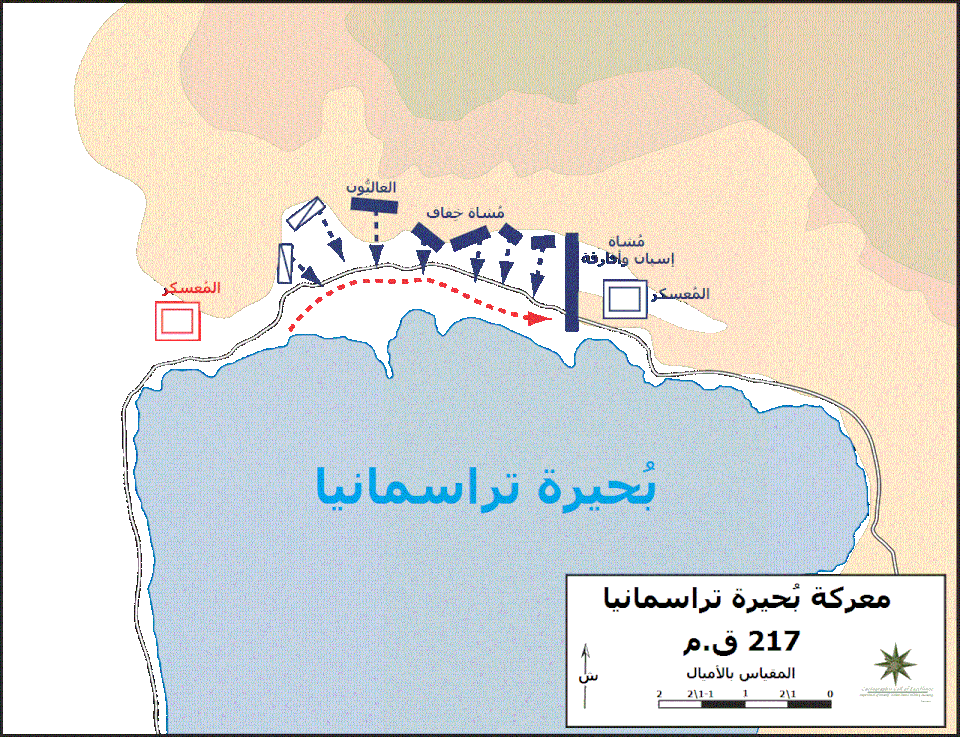
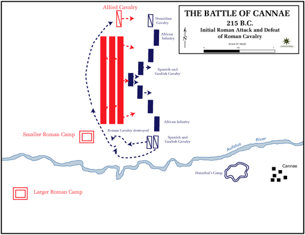
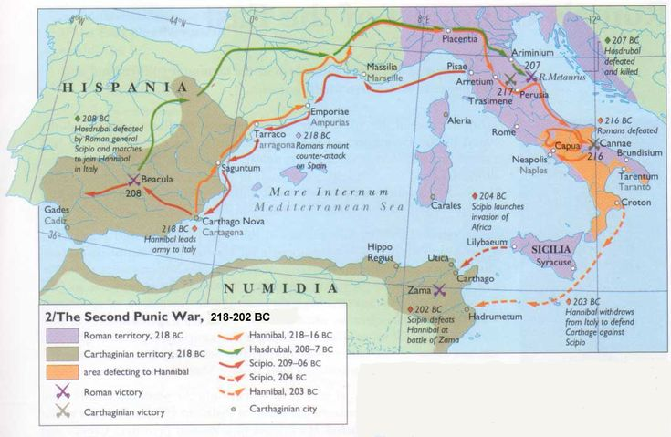
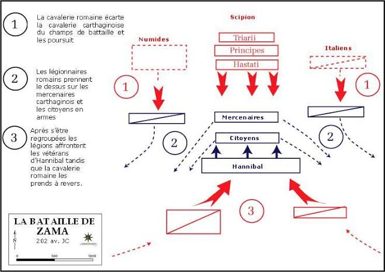

قرطاج: عبقرية حنبعل
مقدمة
مع انتصاف القرن الثالث ق.م دخلت قرطاج في سلسلة من الحروب ضد روما تُسمّى الحروب البونية. انطلقت سنة 264 ق.م وانتهت سنة 146 ق.م بسقوط قرطاج. خاضت قرطاج خلال هذه الفترة ثلاث حروب، تُعتبر الحرب الثانية التي قادها حنبعل أهمّها، إذ تمكن بفضل عبقريته أن يهدّد روما في عقر دارها.
من هو حنبعل؟ وما هي مكوّنات شخصيته وخصاله؟ وكيف ترجمت عبقريته خلال الحرب البونية الثانية؟
I حنبعل: نشأته، تكوينه وخصاله
1. نشأته وتكوينه
- ولد حنبعل بقرطاج سنة 247 ق.م، وهو الابن الأكبر لعبد ملقرت من العائلة البرقية.
- اصطحبه والده وهو في سنّ العاشرة إلى بلاد الإيبيريا لما كان يتولّى قيادة الجيوش القرطاجية في الحرب البونية الأولى.
- تلقّى تربية عسكرية مكثّفة أهلته لقيادة الجيوش وخوض المعارك ببراعة.
- حظي بثقافة واسعة على الطريقة الهلنسية، إذ كان يتقن عدّة لغات، وكان له اطّلاع على التيارات الفكرية السائدة في عصره وعلى الآداب والفلسفة الإغريقية. كان شديد الإعجاب بالإسكندر الأكبر حتى اعتبره البعض «إسكندر عصره».
- مكّنه تكوينه من دراية كبيرة ودقيقة للوضع السياسي والمحيط الجغرافي والبشري لبلدان حوض البحر المتوسط.
- عايش هزيمة قرطاج خلال الحرب البونية الأولى، مما ولّد في نفسه نقمة على التواجد الروماني في قرطاج.
- تولّى أمر بلاد الإيبيريا وهو في سنّ السابعة والعشرين.
2. خصال حنبعل
- كان قائداً عسكرياً بارعاً بقدر ما هو أيضاً رجل سياسة ودبلوماسي محنّك، فكأنما جمع بين مهارات والده العسكرية ودهاء صهره أزربعل.
- كان شجاعاً ذكياً ملكاً بمختلف قواته، يتواجد دائماً في الصفوف الأمامية عند الحروب، مما أكسبه ثقة جنده وحبّهم له.
- تميّز بدهائه وتفنّنه في إعداد الخطط العسكرية، وساعده ذلك على تحقيق عدة انتصارات على أعدائه.
II عبقرية حنبعل تترجمها الحرب البونية الثانية
أدى التنافس في البحر المتوسط بين روما وقرطاج إلى تصادم القوتين منذ منتصف القرن الثالث قبل الميلاد في ثلاث حروب. وقد برزت عبقرية حنبعل خلال الحرب الثانية حين قرّر سنة 218 ق.م مهاجمة روما في عقر دارها.
1. مسار حنبعل خلال الحرب البونية الثانية
- هاجم حنبعل مدينة ساغنتم (Saguntum) فأعلنت روما الحرب على قرطاج لخرقها معاهدة 241 ق.م.
- انطلقت الجيوش القرطاجية بقيادة حنبعل من مقاطعة إيبريا في ربيع 218 ق.م متجهة إلى روما.
- اجتاز حنبعل بقواته (التي تألفت حسب بعض المصادر من جندي وعدد من الفيلة) جبال «البيريني» وجبال «الألب»، وتمكّن في طريقه من استمالة عدد كبير من قبائل بلاد الغال في فرنسا.
- دخل حنبعل الأراضي الرومانية بعد أن فقد عدداً كبيراً من جنده، لكنه في المقابل استطاع عزل الرومان بعد أن تمكّن من عقد صفقات مع حلفائها وتحييدهم.
- اتبع حنبعل مسلكاً برياً طويلاً وصعباً، لأنه كان يدرك ألّا أمل له في مواجهة الأسطول البحري الروماني الذي يفوق قدرات قرطاج البحرية، وهو ما يؤكد دراية حنبعل بعدوّه.
- خاض حنبعل ضد روما عدة معارك في المجال الإيطالي وانتصر فيها.
- أحسّت روما بالخطر فهاجم أسطولها قرطاج التي استنجدت بحنبعل، الذي غادر إيطاليا وارسي بما تبقّى من جند في ليتيس (لمطة)، والتقى بالجيش الروماني في معركة زاما سنة 202 ق.م والتي انتهت بانتصار روما.
2. معركة تراسيمانوس
- برزت عبقرية حنبعل بشكل واضح خلال هذه المعركة في استغلال المعطيات الطبوغرافية والمناخية لصالحه.
- قامت خطة تراسيمانوس على تطويع المعطيات الطبوغرافية (البحيرة، المرتفعات، المضيق) لخدمة المعركة، حيث تمت مهاجمة الجيش الروماني بشكل مفاجئ مستغلاً الظروف المناخية (الضباب) من كل الاتجاهات، فتمكّن في ظرف وجيز من تحقيق انتصار باهر أذهل الرومان رغم قلة عدد جنده مقارنة بالرومان.
3. معركة قانّة
- تُعتبر من أشهر المعارك التي خاضتها قرطاج ضد روما، وقد أبدع خلالها حنبعل وبرهن على ذكائه ودهائه وحذقه لفنون القتال.
- قامت خطته على المراحل التالية:
- نظّم جيشه في شكل قوس محدّد في اتجاه الجيش الروماني الذي كان أكثر عدداً للإيهامهم بضعف النقطة الأمامية حتى يركّزوا عليها هجومهم.
- بتقدّم الرومان يتراجع القوس ليصبح شيئاً فشيئاً منفرجاً ليتم تطويق الجيش الروماني بشكل كلّي من كل الاتجاهات ومباغتته بشكل مفاجئ.
- تمكّن حنبعل خلال هذه المعركة من تحقيق انتصار سريع وألحق بالجيش الروماني هزيمة مذلّة حطّمت كبرياءه.
- تمكّن حنبعل بفضل هذه الإستراتيجية من تحقيق انتصارات هامة ومفاجئة حطّمت أسطورة الجيش الروماني الذي لا يُقهر.
خاتمة
حقّق حنبعل خلال الحرب البونية الثانية عدّة انتصارات برهنت على عبقريته، لكن رغم الانتصارات التي حقّقها فإن هزيمة قرطاج في معركة زامة سنة 202 ق.م (أو 201 ق.م) ستمهّد الطريق أمام روما لتهيمن على المنطقة تدريجياً.
📖 تعريفات
👤 شخصيات
- حنبعل: قائد عسكري قرطاجي وُلد سنة 247 ق.م، وهو الابن الأكبر لعبد ملقرت من العائلة البرقية. تلقّى تربية عسكرية مكثّفة وثقافة واسعة على الطريقة الهلنسية. تولّى أمر بلاد الإيبيريا في سنّ السابعة والعشرين، وقاد الجيوش القرطاجية في الحرب البونية الثانية، وتميّز بدهائه وتفنّنه في إعداد الخطط العسكرية، حتى اعتبره البعض «إسكندر عصره».
- عبد ملقرت (أميلقار برقة): والد حنبعل، قائد الجيوش القرطاجية في الحرب البونية الأولى ببلاد الإيبيريا، اصطحب حنبعل معه وهو في سنّ العاشرة، وكان له تأثير كبير في تكوينه العسكري.
- أزربعل: صهر حنبعل، وقد جمع حنبعل بين مهارات والده العسكرية ودهاء صهره أزربعل.
- الإسكندر الأكبر: قائد مقدوني عظيم، كان حنبعل شديد الإعجاب به حتى اعتبره البعض «إسكندر عصره».
🌍 دول ومناطق
- قرطاج: مسقط رأس حنبعل، والقوة البحرية والتجارية التي خاضت الحروب البونية ضد روما.
- روما: القوة المنافسة لقرطاج في البحر المتوسط، والتي انتهت الحروب البونية بانتصارها وسقوط قرطاج سنة 146 ق.م.
- بلاد الإيبيريا: مقاطعة في شبه الجزيرة الإيبيرية، تولّى حنبعل أمرها في سنّ السابعة والعشرين، وانطلقت منها جيوشه في الحرب البونية الثانية.
- ساغنتم (Saguntum): مدينة هاجمها حنبعل، فأعلنت روما الحرب على قرطاج لخرقها معاهدة 241 ق.م.
- جبال البيريني: جبال اجتازها حنبعل بقواته في طريقه من إيبيريا نحو إيطاليا.
- جبال الألب: جبال اجتازها حنبعل بقواته وفيلته في طريقه نحو إيطاليا، في واحدة من أعظم الإنجازات العسكرية في التاريخ.
- بلاد الغال (فرنسا): منطقة تمكّن حنبعل في طريقه من استمالة عدد كبير من قبائلها إلى جانبه.
- إيطاليا: المجال الذي خاض فيه حنبعل عدة معارك ضد روما وانتصر فيها.
- بحيرة تراسيمانوس: موقع معركة تراسيمانوس، حيث استغل حنبعل المعطيات الطبوغرافية (البحيرة، المرتفعات، المضيق) والظروف المناخية (الضباب) لتحقيق انتصار باهر.
- قانّة: موقع معركة قانّة الشهيرة، التي أبدع فيها حنبعل باستراتيجية القوس والتطويق، وحقّق فيها انتصاراً سريعاً حطّم أسطورة الجيش الروماني.
- ليتيس (لمطة): المكان الذي ارسى فيه حنبعل بما تبقّى من جنده بعد مغادرته إيطاليا، قبل معركة زاما.
- زاما: موقع المعركة التي انتهت بهزيمة قرطاج سنة 202 ق.م (أو 201 ق.م)، ومهّدت الطريق أمام روما للهيمنة على المنطقة.
- حوض البحر المتوسط: المجال الجغرافي والبشري الذي كانت لحنبعل دراية كبيرة ودقيقة به، بفضل تكوينه الواسع.
⚔️ أحداث هامة
- الحروب البونية: سلسلة من ثلاث حروب بين قرطاج وروما، انطلقت سنة 264 ق.م وانتهت سنة 146 ق.م بسقوط قرطاج، وتُعتبر الحرب الثانية التي قادها حنبعل أهمّها.
- الحرب البونية الأولى: الحرب التي قاد فيها عبد ملقرت، والد حنبعل، الجيوش القرطاجية ببلاد الإيبيريا، وعايش خلالها حنبعل هزيمة قرطاج التي ولّدت في نفسه نقمة على التواجد الروماني.
- معاهدة 241 ق.م: المعاهدة التي خرقها حنبعل بمهاجمته مدينة ساغنتم، فأعلنت روما الحرب على قرطاج.
- الحرب البونية الثانية: الحرب التي قادها حنبعل منذ 218 ق.م، وهاجم فيها روما في عقر دارها، وخاض فيها معارك تراسيمانوس وقانّة، وانتهت بهزيمة قرطاج في معركة زاما.
- معركة تراسيمانوس: معركة استغل فيها حنبعل المعطيات الطبوغرافية والمناخية (البحيرة، المرتفعات، المضيق، الضباب) لتحقيق انتصار باهر رغم قلة عدد جنده.
- معركة قانّة: من أشهر المعارك التي خاضتها قرطاج ضد روما، اعتمد فيها حنبعل استراتيجية القوس والتطويق، وحقّق فيها انتصاراً سريعاً حطّم أسطورة الجيش الروماني.
- معركة زاما: المعركة التي وقعت سنة 202 ق.م (أو 201 ق.م) بين حنبعل والجيش الروماني، وانتهت بانتصار روما، ومهّدت الطريق أمامها للهيمنة على المنطقة.
📅 سنوات وفترات
- 264 ق.م: انطلاق الحروب البونية بين قرطاج وروما.
- 247 ق.م: ولادة حنبعل بقرطاج.
- 241 ق.م: المعاهدة التي خرقها حنبعل بمهاجمته ساغنتم، وكانت سبباً في إعلان روما الحرب على قرطاج.
- 218 ق.م: انطلاق الجيوش القرطاجية بقيادة حنبعل من مقاطعة إيبريا نحو روما في ربيع هذا العام.
- 202 ق.م: معركة زاما التي انتهت بانتصار روما على قرطاج.
- 146 ق.م: سقوط قرطاج ونهاية الحروب البونية.
📌 أخرى
- الثقافة الهلنسية: الثقافة التي حظي بها حنبعل في تكوينه، إذ كان يتقن عدّة لغات، وله اطّلاع على التيارات الفكرية السائدة في عصره وعلى الآداب والفلسفة الإغريقية.
- الإستراتيجية العسكرية: فنّ إعداد الخطط العسكرية وتنظيم الجيوش واستغلال المعطيات الطبوغرافية والمناخية لتحقيق الانتصار، وقد تميّز فيه حنبعل بشكل بارز.
- استراتيجية القوس والتطويق: الخطة التي اعتمدها حنبعل في معركة قانّة، وتقوم على تنظيم الجيش في شكل قوس للإيهام بضعف النقطة الأمامية، ثم التراجع التدريجي لتطويق الجيش الروماني من كل الاتجاهات.
🗺️ خرائط ومعطيات مصورة





